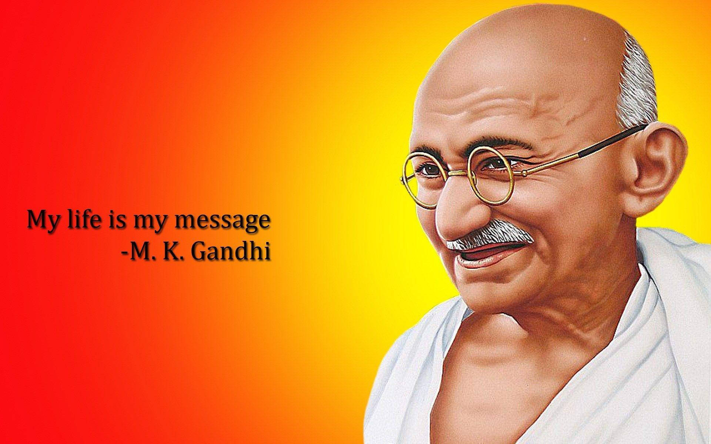

Mahatma Gandhi

First they ignore you, then they laugh at you, then they fight you, then you win. (Mahatma Gandhi)
About the Legend
Timeline
- October 2, 1869: Birth of Mohandas Karamchand Gandhi
- September 4, 1888: Gandhi leaves for England to study law.
- October 1899: Outbreak of Boer War (1899-1901) in South Africa. Gandhi organizes an ambulance corps for the British.
- Gandhi returns to India to attend the Indian National Congress. G.K. Gokhale introduces him to nationalist leaders.
- July 31, 1907: The Boer Republic Transvaal, now under the control of the British, attempts to register all Indians as members; Gandhi and others refuse to register. Their resistance efforts mark the first use of nonviolent non-cooperation by the Indian minority in South Africa, soon calledsatyagraha, or "soul-force."
- August 15, 1947: Indian independence becomes official, as does the partition into two countries, India and Pakistan.
- August-December 1948: India dissolves into chaos and killings, as Hindus and Muslims flee for the borders of India and Pakistan.
- January 30, 1948: Gandhi is assassinated by Nathuram Vinayuk Godse, a Hindu nationalist.
For more information, check out Mahatma Gandhi on Wikipedia. [ Developed by @ Srishailam Bangari. ]